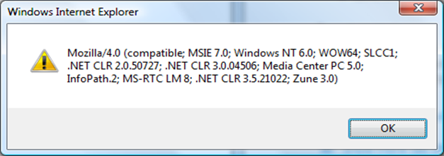

The User Agent String contains information about a browser's identity. The User Agent String is reported to the web server as an HTTP header every time that a browser makes a request to a web server. You can also access it through a client-side script. For example, you can display the User Agent String by typing the following URL into the Windows Internet Explorer 8 address bar: "javascript:alert(navigator.userAgent)". The following illustration shows the typical resulting dialog box from Internet Explorer 8 running on Windows 7.

Typically, the User Agent String is parsed specifically for the MSIE substring. Based on the reported version of the browser, the client-side or server-side programming logic takes a different action. For more information about the User Agent String, see What Will Windows Internet Explorer Report as the User-Agent String?.
Fixing Compatibility Issues in Web Applications by Using Compatibility View
Â
Â